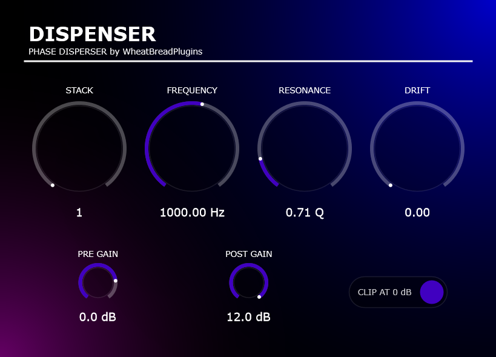

Project Overview
DISPENSER is a clone plugin of Kilohearts Disperser that focuses on SIMD optimization.
Background
As I will explain later, I built this because I came up with a method to apply SIMD (Single Instruction, Multiple Data) processing to IIR filters—something generally considered nearly impossible—and wanted to test it out.
Technical Challenges
1. State Variable Filter implemented using Topology-Preserving Transform
To avoid audio artifacts and unnatural gain fluctuations during modulation in conventional Biquad filters, I implemented an SVF architecture using Topology-Preserving Transform (TPT) with trapezoidal integration, algebraically resolving the zero-delay feedback loop.
This maintained a perfectly flat amplitude response and rock-solid stability even during aggressive cutoff frequency sweeps, achieving seamless phase modulation and an authentic, musical analog response.
2. TPT SVF Implementation & Advanced AVX2 SIMD Parallelization
Due to the nature of IIR filters, time-domain parallelization is impossible owing to state feedback. Additionally, L/R channel parallelization is inefficient for non-interleaved memory because AVX2 lacks scatter instructions. To address this, I designed a spatial parallelization structure using AVX2 SIMD (256-bit YMM registers holding 8 floats), computing 8 filter states concurrently by shifting samples across the vector lane.
This optimization achieved dramatically superior performance compared to a naive 8-filter execution. As a result, even a cascade of 8 parallel units—effectively executing 64 active filter states—runs with minimal CPU overhead in real time.
3. Stereo Uncorrelation via Proprietary 'Drift' Parameter
I expanded the system by introducing a proprietary 'Drift' parameter that dynamically modulates the filter's cutoff frequency. By employing separate rate lookup tables for the left and right channels, I created spatial uncorrelation between L/R phase and frequency responses, resulting in a unique and organic stereo width.
Furthermore, leveraging the architecture that maintains 8 active filter states individually for both L and R channels, the coefficient calculations for all 8 filters are computed concurrently in a single batch. This achieves complex stereo modulation with minimal computational overhead.
4. Per-Sample Coefficient Smoothing for Artifact Reduction
When parameters such as cutoff frequency change via automation or the Drift feature, discontinuous value updates can introduce unpleasant click or zipper noise.
To solve this, I incorporated a per-sample coefficient smoothing mechanism that interpolates and recalculates filter parameters at every sample. This completely eliminates audio drops and step artifacts during rapid parameter sweeps, ensuring ultra-smooth, pristine audio transitions.
5. Compiler-Driven Full Vectorization: Beyond Manual Intrinsics
In this project, I intentionally avoided manual SIMD intrinsics, instead opting for a strategy that achieves full vectorization by maximizing the compiler's optimization capacity. This required an architectural design to systematically eliminate every reason a compiler might 'give up' on vectorization.
First, to optimize loop structures, I decoupled coefficient calculations, register shifting, and core filter computations into distinct loops rather than merging them into a single monolithic loop. When a loop body becomes too complex, compilers often revert to scalar instructions for safety. By isolating these processes, the compiler can apply optimal unrolling and vectorization to each segment, maximizing register reuse efficiency.
Furthermore, I focused on eliminating 'alias ambiguity' during static analysis. By declaring variables locally whenever possible and avoiding pointer-based member access or getter functions, I guaranteed to the compiler that memory regions do not overlap (aliasing). This certainty allows the compiler to speculatively reorder memory accesses, generating assembly that fully saturates the SIMD instruction pipeline.
For data structures, I utilized `std::array
The primary reason for avoiding manual intrinsics is that modern compilers possess a superior understanding of instruction throughput, latency, and optimal scheduling for specific architectures. While human-written intrinsics tend to be sequential, a compiler can shuffle instructions—often in non-intuitive ways—to produce mathematically equivalent yet significantly faster machine code. For instance, the compiler can automatically decide whether to use a dedicated instruction like `hadd` or a faster sequence of primitive SIMD operations.
As a result, the project achieved highly vectorized binaries on Clang and GCC (note: due to algorithmic constraints, only buffer I/O and register shifts remain scalar). This design ensures flexibility for future instruction set extensions while delivering performance that often surpasses manual optimization.